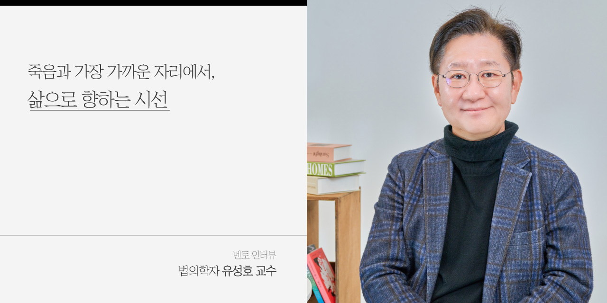
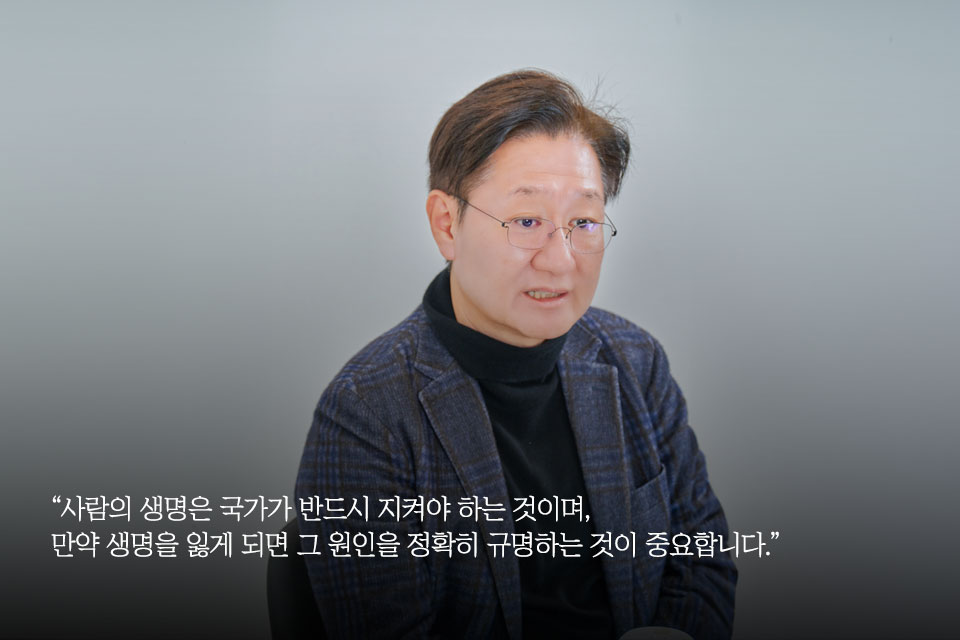
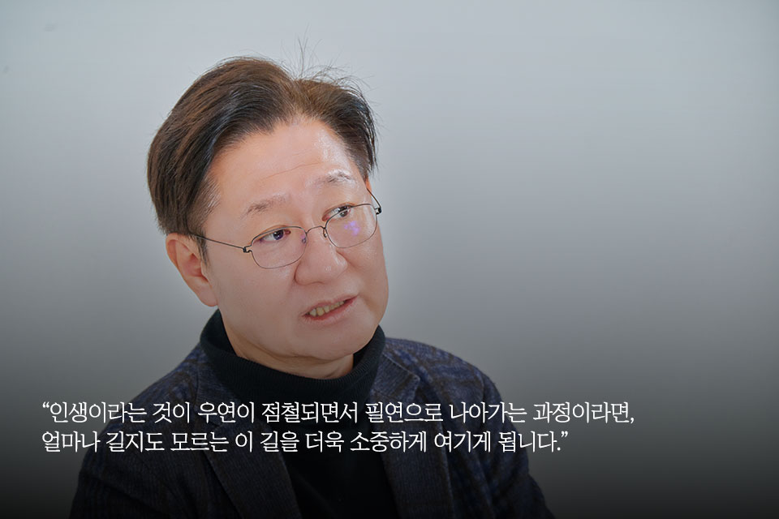
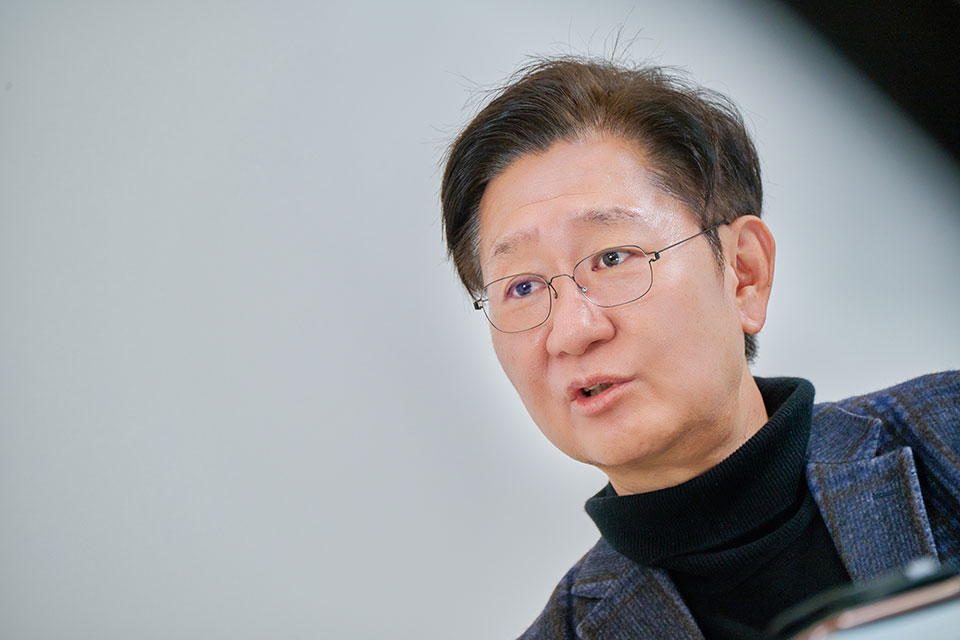
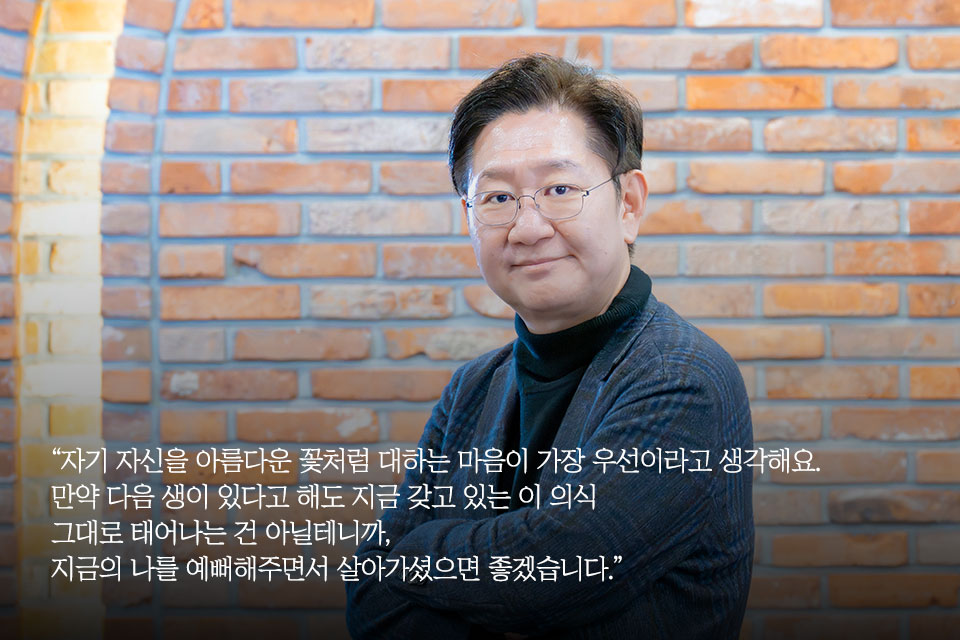

누군가의 시간이 멈춘 자리에서, 그 마지막 이야기를 조용히 건져
올리는 사람이 있다. 죽은 자들이 끝내 말하지 못한 목소리를 듣기
위해 삶의 마지막 장면에 조용히 등장하는, 스스로를 ‘빛도 없는
카메오’라 부르는 법의학자 유성호 교수. 서울대학교 의과대학
법의학교실 교수이자 국립과학수사연구원 촉탁 법의관으로서 그는
강의실과 부검실을 쉼 없이 오가며, 사건이 남긴 흔적과 고인의 마지막
순간에 귀를 기울인다. 그 과정에서 죽음은 단순한 종착점이 아니라,
인간을 가장 깊이 들여다볼 수 있는 통로로 모습을 드러낸다.
그렇기에 유성호 교수의 시선은 죽음을 지나 다시 삶으로 향한다. 매
순간 죽음을 마주하는 일이 결코 가벼울 수 없지만, 그는 그 무게를
피하지 않고 오히려 그 순간들을 삶을 비추는 거울로 삼는다. 그가
죽음의 가장 가까운 자리에서 배운 것들은 그의 연구와 강의, 저서와
다양한 방송 활동을 통해 사회로 흘러가며 삶과 죽음을 바라보는
우리의 사유를 조금 더 넓고 깊게 확장시킨다. ‘스스로를 들판에 핀
아름다운 꽃처럼 대해달라’, ‘뒤를 돌아보며 후회하기 보다 앞으로
펼쳐질 삶을 바라보자’는 그의 당부는, 연말을 맞은 우리에게 조용한
울림을 남기며 새로운 삶을 맞이할 용기를 건넨다.

Q1. 안녕하세요, 교수님! 인터뷰에 앞서 <석유사랑> 독자분들에게 간단히 자기소개와 인사 부탁드립니다.
안녕하세요. 서울대학교 의과대학 법의학교실 교수 유성호입니다. 석유는 우리 에너지의 중추적인 역할을 하는, 말 그대로 인간에게는 ‘쌀’과도 같은 존재입니다. 석유 산업에 종사하시는 분들 덕분에 소비자들이 안심하고 일상생활을 영위하고 있다고 생각합니다. 인터뷰를 통해 인사드릴 수 있게 되어 영광입니다.
Q2. 많은 사람들이 ‘법의학’을 드라마나 영화 속 이미지로 접하곤 합니다. 교수님께서 소개하는 ‘법의학’이란 무엇인가요? 실제 법의학자가 하는 일도 궁금합니다.
법의학의 사전적 정의는 ‘법률의 시행에 필요한 의학적 사항을
연구하고 이를 적용하는 분야’입니다. 쉽게 말하면, 부검을 통해
사람의 사망 원인과 사망 형태를 판단하는 학문이라고 이해하시면
됩니다. 여기서 ‘법률의 시행’이라는 대전제가 있는데요. 사람의
생명은 국가가 반드시 지켜야 하는 것이며, 만약 생명을 잃게 되면 그
원인을 정확히 규명하는 것이 중요합니다. 법의학은 바로 이 전제
위에서 이루어지는 학문이라고 생각하시면 될 것 같습니다.
법의학자가 하는 일 중 가장 큰 부분은 검시입니다. 검시는 ‘검안’과
‘부검’으로 나뉩니다. 검안은 사람의 외형을 직접 손대지 않고 차트를
확인하거나 외표를 관찰하는 것을 말합니다. 부검은 해부하는
일입니다. 의사라면 검시를 수행할 수 있지요. 그렇다면 부검도 누구나
할 수 있다고 생각할 수 있지만, 마치 제가 뇌수술을 하지 않고
신경외과 의사가 전문적으로 수술하듯이, 중요한 사실과 유의미한
정보를 파악하기 위해서는 전문 분야가 필요하며, 그 전문 분야가 바로
법의학입니다. 결론적으로 법의학이 주로 하는 일은 검시 중에서도
부검, 즉 해부를 통한 사망 원인 규명이라고 이해하시면 됩니다.

Q3. ‘의사’라고 하면 일반적으로 진료실에서 환자를 만나는 임상의사를 가장 먼저 떠올리게 되는데요. 같은 의학적 지식을 갖고 있지만 활용하는 방향이 많이 다르고 필요한 역량도 다를 것 같습니다.
맞습니다. 의학에는 크게 ‘임상의학’, ‘기초의학’, ‘사회의학’이라는 세 가지 카테고리가 있습니다. 임상의학은 우리가 병원에서 만나는 의사들이 전공하는 학문이고요. 기초의학은 해부학, 면역학, 생화학처럼 의학의 근본을 연구하는 같은 분야입니다. 사회의학에는 대표적으로 예방의학이 포함되는데, 이는 어떻게 하면 사람들이 병에 걸리지 않도록 할 수 있는지를 연구하는 학문입니다. 저희 법의학은 사회의학에 속합니다. 임상의학과는 다른 분야죠. 같은 의학 지식을 공유하고 같은 교육을 받았지만, 필요로 하는 역량과 관심사는 달라집니다. 예를 들어, 법의학은 법률에 대한 이해도 일부 필요하고, 또 저희는 돌아가신 분들을 대상으로 하기 때문에 살아 있는 분들을 상대하는 임상의학과는 접근 방식과 태도가 달라지는 것도 있습니다.
Q4. 부검을 시작하기 전 마음 속으로 ‘아프지 않게, 보기 흉하지 않게 해드리겠습니다. 진실을 전할 수 있게 최대한 잘 밝혀드리겠습니다.’라고 기도를 드리신다는 말씀이 인상 깊었습니다.
많은 분들이 부검을 한다고 하면 “끔찍하지 않으냐”고 물어보세요. 구체적으로 부검 진행 방식을 말씀드리면, 전날 경찰에서 미리 연락이 오고 아침에 출근하면 경찰을 만나 인터뷰를 해요. 그때 저희에게 반드시 전해주는 것이 신분증입니다. 신분증 사진에는 좀 더 젊은 얼굴, 좀 더 예쁜 모습이 담겨 있잖아요. 그 사진을 보고 부검실에 들어가면, 부검대 위에 누워 계신 분이 사고로 많이 훼손되었든, 피가 묻어 있든, 부패가 많이 진행되었든, “이분도 나처럼 한때 이 지구를 살았고, 나와 같은 표정을 지었던 사람이구나” 하는 생각이 자연스럽게 듭니다. 그러면 끔찍하다거나 싫다는 생각은 전혀 들지 않습니다. 나와 같은 인간이었던 분이고, 또 언젠가의 나이기도 하잖아요. 같은 인간으로서 존엄함을 느끼고 존중한다는 마음을 가질 수밖에 없습니다. 이건 제가 뭔가 특별해서가 아니라, 인간이라면 누구나 가질 수 있는 마음인 거죠.
Q5. 법의학이라는 길을 걷게 된 계기, 그리고 처음 ‘죽음’을 다루며 느끼셨던 감정을 들려주실 수 있을까요?
우리 인생이라는 게 내 의지와 뜻대로 되는 것 같지만, 사실은 우연의
연속인 것 같습니다. 누구를 만나고, 어떤 상황에 직면하느냐에 따라
길이 완전히 달라지기도 하죠. 사실 제가 의과대학에 진학한 것도
특별한 의지 때문은 아니었습니다. 어렸을 때 제 주변에는 의사가
없었어요. 동네에서 부잣집 의사가 있었는데, 어머니께서 아들이 잘
살기를 바라는 마음으로 의대 진학을 희망하셨습니다. 법의학을
선택하게 된 것도 마찬가지입니다. 제가 엄청난 의지를 가지고
법의학자가 되겠다고 다짐한 건 아니었어요. 졸업하기 전에 저희
서울대학교 의과대학에서 법의학 수업을 들었는데 재미있었습니다.
교수님께서는 10년 동안 제자가 한 명도 없다며 걱정하셨는데, 그때
저는 ‘인권과 정의를 위한 이렇게 중요한 학문을 누군가는 꼭 해야
하는구나’라고 느꼈습니다. 이것도 우연일까요? 필연일까요?
운명이라고 할 수 있겠죠. 만약 제가 다른 대학을 갔거나, 그 수업을
빠졌다면 다른 길을 걸었을 수도 있잖아요. 그래서 저는 이 길이 아마
운명인 것 같아요. 살다 보니, 인생은 우연의 연속이고, 그 속에서 내
길이 열리고, 또 그 길이 어쩌면 운명 같기도 하고, 필연 같기도 해서
굉장히 복잡하다는 생각이 들어요.
처음에는 ‘죽음’이라는 게 굉장히 무섭게 느껴지기도 했어요. 10년쯤
지나서는 ‘인생이 참 허무하구나’ 하는 생각도 들었고요. 하지만 이
일을 계속해 오다 보니, 결국 ‘인생이 정말 소중하구나’, ‘이 다음을
알 수 없는 삶을 살아가며, 이 아름다운 지구에서 조금 더 소중하게
살아야겠구나’ 하는 마음이 생겼습니다. 아마 독자분들도 각자의
자리에서 일을 하고 살아가며 수많은 감정과 생각을 갖게 되실 텐데요.
저 역시 마찬가지입니다.

Q6. 오랜 시간 법의학자로서 많은 죽음을 접하시면서, 삶과 죽음을 바라보는 태도에 어떤 변화가 있으셨는지 조금 더 자세히 말씀해주실 수 있을까요?
우리는 많은 죽음을 3인칭으로 바라봅니다. 나와는 상관없는 일,
누군가의 죽음인 거죠. 예를 들어 범죄 사건을 접할 때도 너무
안타깝게 여기지만 여전히 3인칭입니다. 그런데 나이가 들면서 죽음이
2인칭으로 다가오게 됩니다. 사랑하는 사람을 떠나보내는 순간이
분명히 오거든요. 그리고 나 자신이 떠나야 할 때, 그때 비로소 죽음이
1인칭이 됩니다. 우리는 모두 인생이라는 여행을 하는데, 도착지는
결국 모두 같아요.
다른 의사분들도 비슷한 경험을 하실 텐데요. 누군가의 죽음이 3인칭의
죽음을 뛰어넘는 경험을 하는 순간이 옵니다. 나와 관계없는 사람이
아니라, 나의 환자 또는 내가 조사해야 하는 사람. 한 사람의 인생에서
내가 마지막에 등장하는 거잖아요. 막이 내리고 암전이 된 다음에
올라가는 자막처럼요. 내 앞에 있는 사람의 죽음이 더 이상 나와 상관
없는 죽음이 아니게 되는 겁니다.
인생이라는 것이 우연이 점철되면서 필연으로 나아가는 과정이라면,
얼마나 길지도 모르는 이 길을 더욱 소중하게 여기게 됩니다. 인생을
허무하다거나 죽음을 무섭다고 느끼기에는, 우리 인생이 너무나
소중하다는 것을 점점 더 알게 되는 것 같습니다.
Q7. 수많은 사건과 마주하시면서, 사회적·감정적으로 부담을 느끼신 순간은 없으셨나요? 법의학자로서 진실을 밝히기 위해 용기를 내야 했던 순간도 있었을 것 같습니다.
법정에서 증언을 하고 나면 실제로 고소·고발을 당하는 경우도 있습니다. 여러 가지 부담감과 책임감이 있지만, 그럼에도 자유로울 수 있는 건 ‘진리가 우리를 자유롭게 한다’는 믿음 덕분이에요. 법의학은 과학적 근거를 기반으로 한다는 데에 대한 신뢰가 분명히 있고요. 앞서 말씀드렸듯, 본과 4학년 때 들은 ‘법의학은 인권과 정의를 위한 학문이다’라는 말도 여전히 제 가슴 속에 자리하고 있습니다. 이 일이 부담스럽게 느껴지기보다, 오히려 진실을 통해 세상을 조금이나마 자유롭게 할 수 있다는 믿음이 저를 붙잡아줍니다.

1987년 박종철 고문치사 사건을 기억하실 겁니다. 당시 사망 원인은 경부압박에 의한 질식사였고, 고문 과정에서 숨졌다는 사실을 밝힌 분이 바로 저희 선배 법의학자였습니다. 그 시대에는 그런 사실을 드러내는 것이 정말 큰 용기가 필요한 일이었겠죠. 그럼에도 불구하고 부검 감정서를 내고 당당하게 목소리를 낼 수 있었던 건, 아마 과학에 대한 신뢰와 ‘진리가 우리를 자유롭게 할 것’이라는 믿음이 있었기 때문이라고 생각합니다.
Q8. 진실을 좇는 법의학자의 모습은 사람들에게 깊은 울림을 주는 것 같습니다. 법의학이 사회에서 맡는 역할에 대해 더 듣고 싶어집니다. 교수님께서 생각하시는 법의학의 책임과 역할은 무엇일까요?
법의학은 기본적으로 ‘사망의 원인과 종류를 밝히는 일’입니다. 사망
원인은 예를 들어 폐암으로 인한 사망인지, 교통사고로 인한
사망인지와 같은 원인을 말하고, 사망의 종류는 질병에 의한 ‘병사’,
자살·타살·사고사 등 ‘외인사’, 그리고 원인을 알 수 없는 ‘불명’으로
구분됩니다. 국가적 차원에서 보면, 무엇보다 억울한 죽음이 없어야
합니다. 또 하나는 정확한 통계를 기반으로 정책을 세울 수 있어야
한다는 점입니다. 세금을 올바르게 사용하기 위해서라도 반드시 사망
원인은 제대로 파악해야 하죠. 예를 들어, 50세 이상인 분들이
홀수해에 대장암 검진을 받도록 안내하는 것, 자살률을 낮추기 위해
전방위적으로 정책을 시행하는 것 모두 법의학에서 밝히고 있는 것들이
국가 통계가 되어 정책에 활용되는 사례입니다.
죽음의 진실을 밝히는 일은 개인적 측면에서도 중요합니다. 가족력이
있을 경우 정확히 아는 것이 본인과 가족의 건강을 지키는 데 도움이
되고요. 요즘 보험 가입이 많아지면서 분쟁도 늘고 있는데, 이때
정확한 사망 원인 규명은 매우 중요한 기준이 됩니다. 법의학이 밝히는
죽음의 진실은 국가의 정책부터 개인의 삶까지, 여러 층위에서
현실적인 영향을 미치고 있다고 생각합니다.
Q9. 죽음은 개인의 사건이면서도 사회와 맞닿아 공동체가 함께 경험하는 일이기도 합니다. 법의학자로 활동하시면서, 우리 사회에서 ‘죽음의 형태’가 어떻게 변화해왔다고 느끼시나요?
우리 사회가 점점 ‘관계’에 소홀해지는 경향이 있는 것 같습니다.
인간은 개별성을 지닌 존재이기도 하지만 동시에 사회적 존재이기도
하잖아요. 그런데 요즘은 그 사회적 연결이 점점 약해지는 것 같다는
생각을 합니다. 고독사가 크게 늘어난 것도 그런 흐름의 단면이라고
생각해요. 1인 가구 증가 자체가 고독사의 원인이라고 보기는
어렵습니다. 혼자 살아도 다양한 커뮤니티에 속하며 충분히 사회성을
유지할 수 있는데, 우리 사회 구조가 이런 부분을 충분히 뒷받침해주지
못하는 면이 있는 것 같습니다.
우리나라 사망 원인 5위가 자살입니다. 타인과의 관계 맺음, 서로
연결되는 경험들이 상대적으로 도외시되는 건 아닐까 하는 생각이
듭니다. 법의학자로서 바라보면, 이런 사회적 변화가 고스란히 죽음의
형태에 반영된다고 느껴져요. ‘우리가 함께한다’는 감각, 관계를
맺는다는 것이 얼마나 중요한지 더 깊이 느끼게 됩니다.
Q10. 올해 『유언 노트』와 『시체는 거짓말하지 않는다』를 출간하셨습니다. 다양한 매체를 통해 대중과 적극적으로 소통하시는 데에는 어떤 의미가 담겨 있는지 궁금합니다.
많은 분들이 저에게 ‘진료는 안 하시나요?’라고 묻습니다. 저는 임상의사가 아니기 때문에 살아 있는 환자를 치료하지 않고, 돌아가신 분을 대상으로 일하죠. 그래서 살아 있는 분들과 직접 이야기를 나눌 창구가 많지 않습니다. 유튜브가 그런 역할을 하고 있고, 책 또한 그 창구 중 하나입니다. 20년 넘게 이 일을 하면서, 사람의 신체와 마음이라는 두 가지 관점에서 ‘죽기 전에 이랬으면 어땠을까?’ 하고 생각하게 되는 순간들이 많았습니다. 그래서 마음에 대한 이야기를 담은 책이 『유언 노트』이고, 신체에 대한 이야기를 담은 책이 『시체는 거짓말하지 않는다』입니다. 진료실에서 환자를 돌보는 의사는 살아 있는 사람을 치료하지만, 저는 그 반대편에서 역추적해나가는 의사라고 할 수 있습니다. 그런 시각에서 반대편에서 보는 의사가 삶과 죽음을 이야기한다면, 독자분들에게 또 다른 의미로 다가갈 수 있지 않을까 생각했습니다. 『유언 노트』는 단순히 ‘죽기 전에 유언을 써라’는 내용이 아닙니다. 유언을 작성해봄으로써, 현재 살아 있는 삶을 더 소중히 여기게 된다는 메시지를 전하고 싶었습니다. 저도 매년 연말마다 유언을 써보곤 하는데요. 꼭 유언이라는 단어를 쓰지 않더라도, 한 해를 돌아보며 자신의 인생을 되짚어보는 글쓰기를 해보시는 것을 추천드립니다.

Q11. 교수님께서 보시기에, 살아가면서 이 부분만큼은 조금 더 신경을 썼으면 좋겠다 싶은 것이 있다면 무엇일까요?
딱 한 가지 말씀드리고 싶은 것은, 스스로를 들판의 잡초처럼 대하지 않으셨으면 좋겠습니다. 몸이든 마음이든, 나 자신을 아름다운 꽃처럼 소중히 대해주셨으면 해요. ‘인생이 그냥 그런 거지’ 하면서 나를 잡초 취급하면, 정말로 내 몸이 잡초가 되고 마음도 흐트러지거든요. 들판에 핀 아름다운 들꽃처럼 나 자신을 대해주면, 그게 가장 좋은 것 같아요. 물론 술을 줄이고, 담배를 피우지 말라는 이야기도 중요하겠지만, 그보다 먼저 자기 자신을 아름다운 꽃처럼 대하는 마음이 가장 우선이라고 생각해요. 만약 다음 생이 있다고 해도 지금 갖고 있는 이 의식 그대로 태어나는 건 아닐테니까, 그렇다면 지금의 나를 예뻐해주면서 살아가셨으면 좋겠다고 말씀드리고 싶습니다.
Q12. 법의학자로서 품고 계신 바람과, 한 인간으로서 이루고 싶은 꿈이나 소망이 있다면 무엇인지 궁금합니다.
최근에는 뇌와 관련된 알코올 중독 연구를 비롯해 다양한 연구를 진행하고 있습니다. 개인적으로는 사회에 좀 더 의미 있는 영향을 줄 수 있는 연구를 이어가고 싶습니다. 우리는 아직 우리 몸에 대해 잘 모르는 부분이 많아요. 그런 부분을 법의학을 통해 밝혀가는 데 기여하고 싶습니다. 또 한 가지 바람은 후학들을 잘 키워서 청출어람으로 저보다 훨씬 더 좋은 연구와 영향을 만들어낼 수 있는 법의학자를 배출하는 것입니다. 그리고 책이든 유튜브든, 혹은 다른 방식이든, 앞으로 오랫동안 많은 분들과 호흡하며 이야기를 나눌 수 있는 법의학자가 되고 싶은 바람도 있습니다.
Q13. 연말이 다가오고 있습니다. 한 해를 마무리하는 이 시점에서, 이 인터뷰를 통해 <석유사랑> 독자분들에게 전하고 싶은 말씀이 있다면 나눠주세요.
제가 이 일을 하면서 가장 많이 느낀 것은 ‘뒤돌아보지 말라’는
것입니다. 과학적으로 회귀는 불가능하거든요. 그런데 많은 분들이
과거를 돌아보며 회귀를 꿈꿔요. ‘이랬으면 어땠을까, 저랬으면
어땠을까’하고 아쉬워하시죠. 연말이 다가오면 지난 한 해가 특히
아쉽게 느껴질 수도 있고요. 그렇지만 제가 늘 말씀드리고 싶은 것은,
지나치게 아쉬운 마음에 머무르지 마시고, 앞으로 다가올 한 해와 나의
인생에 펼쳐질 일들을 더 소중하게 여기며 계획을 세우라는 것입니다.
설레는 마음으로 계획을 세우는 것이, 인생에서 즐거움을 느끼고 나
자신을 소중히 여기는 하나의 방법이 될 수 있습니다.
또 한 가지, 12월이면 우리가 특히 조심해야 할 것이 있습니다. 흔히
‘망년회’라고 하잖아요. 잊을 ‘망’(忘) 자를 쓰는데, 무언가를 잊기
위해 지나치게 마시는 술은 뇌세포를 감소시키는 분명한 원인이
됩니다. 연말 술자리는 적당한 음주와 더 즐거운 교류를 나누는 정도로
즐기시기를 바라겠습니다.